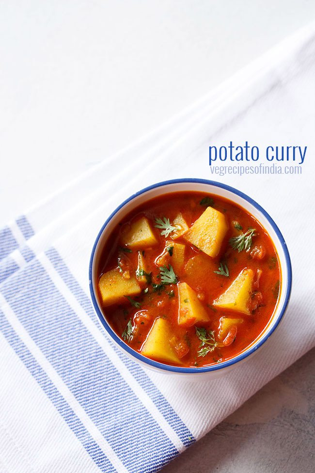

Aloo Curry

Ingredients
- 3 tablespoons oil
- ½ teaspoon finely chopped garlic
- ½ cup chopped onions
- 1 cup of tightly packed chopped tomatoes
- ½ teaspoon turmeric powder
- 1 teaspoon kashmiri red chilli powder
- ½ teaspoon coriander powder
- ½ teaspoon garam masala powder
- ½ teaspoon cumin powder (optional)
- 1 finely chopped green chili
- 4 medium sized potatoes, diced
- ¼ cup chopped coriander leaves
Instructions
- Heat 3 tablespoons oil in a pan or kadai. Add ½ teaspoon finely chopped garlic and saute for a few seconds. No need to brown garlic. You can also add 2 tablespoons oil.
You can use any neutral flavored oil. For this recipe, I prefer to use peanut oil. However you can also make it in sunflower oil, canola oil, avocado oil or grapeseed oil.
- Next add ½ cup chopped onions.
- Sauté until the onions turn translucent on a medium-low heat. Keep on stirring in intervals.
- Then add 1 cup of tightly packed chopped tomatoes.
- Mix very well.
- Cover the pan with its lid and simmer on a low heat until the tomatoes soften and become mushy. Do check a couple of times when the tomatoes are cooking.
- Cook until the tomatoes soften and become mushy.
- When the tomatoes have softened well, then add ½ teaspoon turmeric powder, 1 teaspoon kashmiri red chilli powder (or ½ teaspoon regular red chilli powder or cayenne pepper), ½ teaspoon coriander powder, ½ teaspoon garam masala powder and ½ teaspoon cumin powder (optional).
- Mix the spice powders very well with the onion-tomato mixture.
- Then add diced potatoes (4 medium sized potatoes, diced). Also season with salt as required.
- Mix very well.
- Pour 2 cups of water and stir well.
- Cover the pan with its lid and simmer on a medium to medium-high flame until the potatoes are cooked.
- Do check a couple of times when your curry is simmering.
- The aloo curry will thicken slightly by the time the potatoes are done. You will also see some oil specks on the top of the gravy.
- Then switch off the heat and add ¼ cup chopped coriander leaves (cilantro). Mix very well.
- Serve potato curry hot or warm.